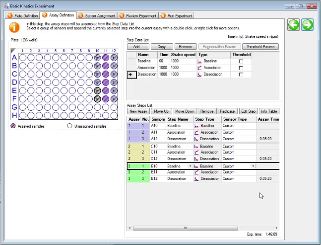

On the attached PC, start the Octet Data Acquisition Software
Define buffers and samples in the Plate Definition window in the acquisition software by dragging the mouse to highlight the desired wells. Right click to specify wells as sample, reference, control, buffer, activation, etc.
Enter your Sample IDs, the concentrations, and molecular weights for your samples in the plate table
In the Assay Definition tab, select your buffer wells and specify the assay type as Baseline, and specify the time (in seconds) and shake speed (in rpm). Assay steps are run in pairs so you will be defining two steps at a time
Double click an item in the Step Data List to add it to the Assay Steps List
Select your protein wells, click Add, and specify them as Association assays
Select the next buffer wells, click Add, and specify them as Dissociation assays
Select the assay steps under Assay Steps List and use the Replicate button to repeat experiments with different wells. Note that the total experiment time will update in the bottom right of the panel
Change the Sensor Type in each assay step to the sensor being used

Select the Sensor Assignment tab. Under the Sensory Tray panel, drag the mouse to select your sensors and right click to assign them

In the Run Experiment tab, specify where to save you data. You can uncheck Delayed Experiment Start if your sensors are already prehydrated or adjust the delay time
Click Go to begin the experiment